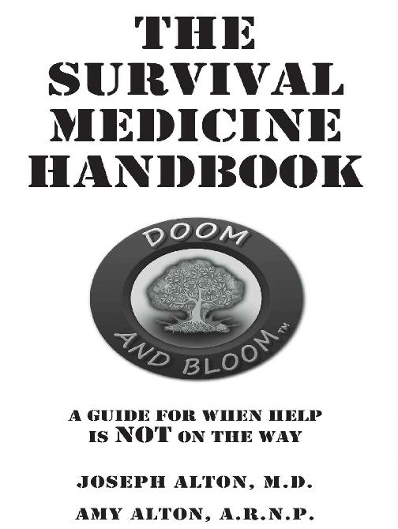
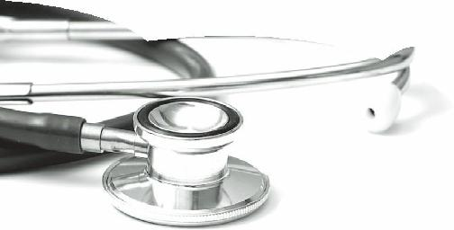
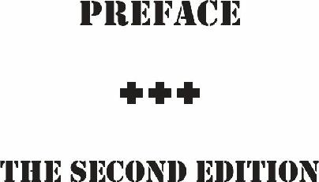
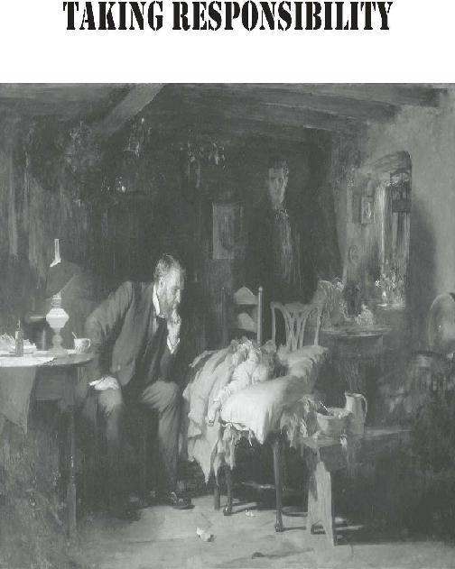
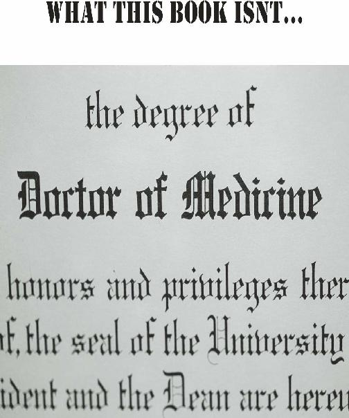
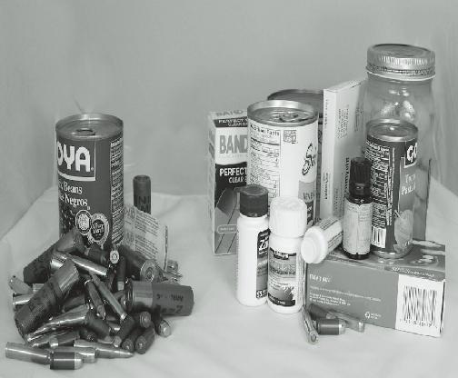
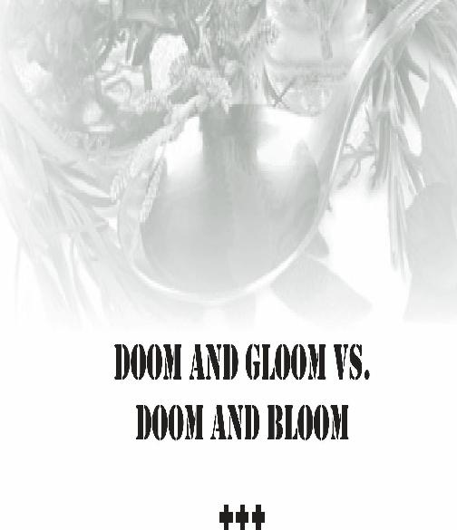

DISCLAIMER
The information given and opinions voiced in this volume are for educational and entertainment purposes only and does not constitute medical advice or the practice of medicine. No provider-patient relationship, explicit or implied, exists between the publisher, authors, and readers. This book does not substitute for such a relationship with a qualified provider. As many of the strategies discussed in this volume would be less effective than proven present-day medications and technology, the authors and publisher strongly urge their readers to seek modern and standard medical care with certified practitioners whenever and wherever it is available.
The reader should never delay seeking medical advice, disregard medical advice, or discontinue medical treatment because of information in this book or any resources cited in this book.
Although the authors have researched all sources to ensure accuracy and completeness, they assume no responsibility for errors, omissions, or other inconsistencies therein. Neither do the authors or publisher assume liability for any harm caused by the use or misuse of any methods, products, instructions or information in this book or any resources cited in this book.
No portion of this book may be reproduced by any electronic, mechanical or other means without the written permission of the authors. Any and all requests for such permission should be sent by email to drbonesclass@aol.com.
Most illustrations by Jeff Meyer of anaseer.com
Copyright 2013 Doom and BloomT M, LLC
All rights reserved.
ISBN-13: 978-0988872530
ISBN: 0988872536
This book is dedicated to my wife Amy, whose positive
attitude and sunny disposition truly puts the “Bloom” in
“Doom and Bloom”. She is the person who first made it
clear to me that this book was both possible to write and
needed by those who want to be medically prepared in
times of trouble.
JOSEPH ALT ON, M.D.
I dedicate this book to my husband Joe, whose selfless
attitude and compassion for his patients over the years
has never wavered. He is unceasing in his efforts to
help those who want to learn how to keep their loved
ones healthy, in good times or bad.
AMY ALT ON, A.R.N.P.
Additionally, we both dedicate this book to those who
are willing to take responsibility for the health of their
loved ones in times of trouble. We salute your courage in
accepting this assignment; have no doubt, you will save
lives.
JOSEPH ALT ON, M.D. AND AMY ALT ON, A.R.N.P.
“DO WHAT YOU CAN, WITH WHAT
YOU HAVE, WHERE YOU ARE.”
T HEODORE ROOSEVELT
Joseph Alton practiced as a board-certified Obstetrician and Pelvic Surgeon for more than 25 years before retiring to devote his efforts to preparing families medically for any scenario. He is a Fellow of the
American College of Obstetrics and Gynecology and the
American College of Surgeons, served as department chairman at local hospitals and as an adjunct professor at local university nursing schools. He is a contributor to well-known preparedness magazines and is frequently invited to speak at survival and preparedness conferences throughout the country on the subject of medical readiness. A member of MENSA, Dr. Alton collects medical books from the 19th century to gain insight on off-the-grid medical protocols.
Amy Alton is an Advanced Registered Nurse Practitioner and a Certified Nurse-Midwife. She has had years of experience working in large teaching institutions as well as smaller, family-oriented hospitals. Amy has extensive medicinal herb and vegetable gardens and works to include natural remedies into her strategies.
Dr. and Ms. Alton are devoted aqua culturists (currently raising tilapia) and aquaponic, raised bed, and container gardening experts. As “Dr. Bones and Nurse Amy”, they host a medical preparedness website at www.doomandbloom.net, and produce video and radio programs under the Doom and BloomT M label. Dr. and
Ms. Alton are firm believers that, to remain healthy in hard times, we must use all the tools in the medical woodshed. Their goal is to promote integrated medicine;
in this way, they can offer their readers the most options to keep their loved ones healthy in a long-term survival situation.


When we first embarked on the adventure of writing the first edition of this book,
“The
Doom and
BloomT M
Survival
Medicine
Handbook”, we were overwhelmed by the challenge that confronted us.
Although there was a wealth of information about the occasional few of injury on a wilderness hike, books considered the possibility a setting so remote or devastated that NO hope of modern medical care existed for the long term. Even books that were meant for in third world environments often ended their use to get to modern medical chapters by exhorting their readers care as soon as possible.
We realized that we were in uncharted territory. Our concern was the major catastrophe that isolated a family from modern medicine for the long term. Trained personnel would not exist in this scenario, or would be overwhelmed by the demand for their services. What does a mother or father do in this circumstance? How would they deal with injuries or sickness? What could we, as medical professionals, do to improve their family’s chances of surviving and staying healthy?
We decided that a how-to manual in plain English was the best option. We had to put together a strategy for each medical issue that we felt a head of household would encounter in times in trouble. It had to be simple.
It had to make use of limited resources in a sustainable manner. It had to be realistic.
The last part was the hardest. It’s difficult to make people believe that a head injury or a gunshot wound to the chest may not be survivable. No one wants to return to a time when, for example, pregnancy was a major cause of death. It’s painful to think about, but we must face the hard truth, sometimes.
So we looked at every individual medical problem we could think of. How could we teach a non-medical person how to approach that problem in simple fashion?
We considered what medical supplies they would need, how to use them, and how to replace them, when possible, with natural alternatives. More importantly, we figured out ways to best prevent medical problems.
It wasn’t easy. Many times, we had to dig back into our collection of 19th century medical books to find methods that would be useful in grid-down situations.
These methods weren’t superior to what modern medicine has to offer; as a matter of fact, some are downright obsolete. Despite this, we found a number of ways that our great grandparents used that might be of benefit in a long term survival setting.
When the book was published, we expected that, perhaps, a couple of hundred people might obtain it. A year later, tens of thousands have the book in their possession. The book has received acclaim and it has received criticism; luckily for us, more of the former than the latter.
This 2nd Edition covers more issues that the first book, and covers almost every subject in more detail.
The book updates a number of areas of the first book with new strategies that we have devised for various problems. Every section has been amended in some way; some a little, some a lot.
We hope that this book will serve as a useful reference to the average family. The person that will accept responsibility for their family’s medical wellbeing in uncertain times is a very special person. We hope that we have provided a tool for their goal: To succeed, even if everything else fails.

Most outdoor medicine guides are intended to aid you in managing emergency situations in austere and remote locations. Certainly, modern medical care on an ocean voyage or wilderness hike is not readily available; even trips to the cities of underdeveloped countries may fit this category as well.
There are medical strategies for these mostly short term scenarios that are widely published, and they are both reasonable and effective. An entire medical education system exists to deal with limited wilderness or disaster situations, and it is served by a growing industry of supplies and equipment. You expect, not unreasonably, that the rescue helicopter is already on the way.
What is your goal when an emergency occurs in a remote setting? The basic premise of “wilderness” or
“disaster” medicine is to:
Evaluate the injured or ill patient.
Stabilize their condition.
Transport the individual to the nearest modern hospital, clinic, or emergency care center.
This series of steps makes perfect sense; you are not a physician and, somewhere, there are facilities that have a lot more technology than you have in your backpack.
Your priority is to get the patient out of immediate danger and then ship them off; this will allow you to continue on your wilderness adventure. Transporting the injured person may be difficult to do (sometimes very difficult), but you still have the luxury of being able to
”pass the buck” to those who have more knowledge, technology and supplies. And why not? You aren’t a medical professional, after all.
One day, however, there may come a time when a pandemic, civil unrest or terrorist event may precipitate a situation where the miracle of modern medicine may be unavailable. Indeed, not only unavailable, but even to the point that the potential for access to modern facilities no longer exists.
We refer to this type of long-term scenario as a
“collapse”. In a collapse, you will have more risk for illness and injury than on a hike in the woods, yet little or no hope of obtaining more advanced care than you, yourself, can provide. It’s not a matter of a few days without modern technology, such as after a hurricane or tornado. Help is NOT on the way; therefore, you have become the place where the “buck” stops for the foreseeable future.
Few are prepared to deal with the harsh reality of a long-term survival situation. To go further, very few are willing to even entertain the possibility that such a tremendous burden might be placed upon them. Even for those stalwarts that are willing, there are few, if any, books that will consider this drastic turn of events. Yet, the likelihood of your exposure to such a situation, at some point in your life, may not be so small. It stands to reason, therefore, that some medical education might be useful in times of trouble.
Almost all handbooks (some quite good) on wilderness or third world medicine will usually end a section with: “Go to the hospital immediately”. Although this is excellent advice for modern times, it won’t be very helpful in an uncertain future when the hospitals might all be out of commission. We only have to look at
Hurricane Katrina in 2005 to know that even modern medical facilities may be useless if they are understaffed, under-supplied, and overcrowded.
Unwittingly, the majority of the citizens in New
Orleans became their own medical care providers in the aftermath of the storm. With medical assistance teams overwhelmed, no one was coming to the aid of one injured or ill individual when thousands needed help at once. Each household became the “end of the line” when it came to its own well-being.
If you become the end of the line with regards to the medical well-being of your family or group, there are certain adjustments that have to be made. Medical supplies must be accumulated to deal with varied emergencies. Medical knowledge must be obtained, shared, and assimilated. These medical supplies and skills must then be adjusted to fit the mindset that you must adopt in a collapse: That things have changed for the long term, and that you are the sole medical resource when it comes to keeping your people healthy.
This is a huge responsibility. Many, when confronted, will decide that they cannot bear the burden of being in charge of the medical care of others. Others, however, will find the fortitude to grit their teeth and wear the badge of survival “medic”. These individuals may have some medical experience, but most will simply be fathers and mothers who understand that someone must be appointed to handle things when medical help is
NOT on the way.
If this reality first becomes apparent when a loved one becomes deathly ill, the likelihood that you will have the training and supplies needed to be an effective medical provider will be close to zero. This is a sure way to assure that, when everything else fails, you will, too.
This volume is meant to educate and prepare those who want to ensure the health of their loved ones. If you can absorb the information here, you will be better equipped to handle 90% of the emergencies that you will see in a power-down scenario. As well, you will have a realistic view of what medical issues are survivable without modern facilities.
These realities may place you between a rock and a hard place. Over time, you will certainly have to make difficult decisions. With this book, we hope to give you the tools to arrive at choices that will increase your chances of successfully treating injuries and disease.
All the information contained in this book is meant for use in a post-apocalyptic setting, when modern medicine no longer exists. If your leg is broken in five places, it stands to reason that you’ll do better in an orthopedic hospital ward than with a splint made out of two sticks and strips of a T-shirt.
The strategies discussed here are not the most effective means of taking care of certain medical problems. In fact, some of them are straight out of the last century. They adhere to the philosophy that something is better than nothing; in a survival situation, that “something” might just get you through the storm.
As Theodore Roosevelt once said, “You must do what you can, with what you have, where you are”.
Hopefully, societal destabilization will never happen.
This book is a weapon against, not an argument for, an end of the world scenario. If we never encounter a longterm survival situation, this book will still have its uses.
Natural catastrophes such as Hurricane Katrina will always rear their ugly heads.
These events are inevitable at one point or another, and will tax even the most advanced medical delivery systems. Medical personnel will be unlikely to be readily available to help you if they are overwhelmed by mass casualties.
Even a few days without access to health care may be fatal in an emergency. The information provided here will be valuable while you are waiting for help to arrive.
With some medical knowledge and supplies, you may gain precious time for an injured loved one and aid in their recovery.
An important caveat: In most locales, the practice of medicine or dentistry without a license is against the law.
None of the recommendations in this book will protect you from liability if you implement them where there is a functioning government and legal system. Consider obtaining formal medical education if you want to become a healthcare provider in a pre-collapse society.
All it takes is your time, energy, and dedication.
Although you will not be a physician after reading this volume, you will certainly be more of a medical asset to your family, group, or community than you were before. Among other things, you will have:
Learned to think about what to do when you become the end of the line in terms of your family’s medical well-being.
Considered preventative medicine and sanitation.
Looked at your environment to see what plants might have medicinal value.
Put together a medical kit which, along with standard equipment, includes traditional medications and natural remedies.
Thought about how to improvise in an austere setting.
Most importantly, you will have become medically prepared to face the very uncertain future; and after all, isn’t that what you wanted to accomplish when you first picked up this book?

The first part of this preface described this and other books that might be helpful in scenarios that might occur as a result of the aftermath of a major disaster or longterm catastrophe. The information in this book will be useful to those preparing for those events. It might also be helpful in a remote setting for those who have to fend for themselves for long periods of time.
This book will not meet the needs of certain people.
If you are already a doctor or formally-trained medical professional, you will feel that some of the information in this book is below your pay grade.
You would be right, as this book is not primarily intended for you. It is meant for the non-medical professional who is concerned about keeping their family healthy when trained personnel, such as yourself, are no longer around.
This book might have some use, however, for the flexibly-minded medical pro. In a long-term survival situation, medical personnel will not have the luxury of
“Stabilize and Transport” and will have to adjust their mindset. This book is of that mindset already. It might be helpful for some who would ordinarily transport a patient out: It might make them think about how to prepare for when they might be the highest medical resource left.
The book does not claim to be a comprehensive review of every topic covered in it. Don’t expect, for example, 50 pages on how to treat Athlete’s Foot between its covers.
As well, this book is not meant for the person who expects to perform advanced medical procedures in the wilderness or any other power-down survival setting.
You will not learn how to perform a cardiac bypass by reading this book, nor will you be learning how to successfully re-attach an amputated leg.
If nothing else, this book is realistic, and does not claim to cure problems that only modern technology will help. Having said this, you will still be able to deal with the majority of survivable issues you will encounter in an austere setting.
This book is about integrated medicine, so if you are dead set against either conventional or alternative methods of healing, you will not be happy with this book. This book often bucks the conventional medical wisdom; at the same time, it is suspect of alternative claims that a particular substance is a cure-all for every disease. This book looks at what is likely to be of benefit in emergency situations with limited supplies. With it, you’ll have the best chance of maintaining the long-term health of a family or community.
DISCLAIMER
DEDICATIONS
ABOUT THE AUTHORS
PREFACE: THE SECOND EDITION
• TAKING RESPONSIBILITY • WHAT THIS BOOK ISN’T
INTRODUCTION: ARE YOU NORMAL?
SECTION 1: PRINCIPLES OF MEDICAL
PREPAREDNESS
• DOOM AND BLOOM VS. DOOM AND GLOOM
• BAD NEWS AND GOOD NEWS
• HISTORY OF PREPAREDNESS
• MEDICAL PREPAREDNESS
• THE CONCEPT OF INTEGRATED MEDICINE
• WILDERNESS MEDICINE VS. LONG TERM
SURVIVAL MEDICINE
• THE IMPORTANCE OF COMMUNITY
-Practice What You Preach
SECTION 2: BECOMING A MEDICAL RESOURCE
• THE SURVIVAL MEDIC • THE STATUS ASSESSMENT
-Responsibilities
-Scenarios
-How Many People?
-Special Needs?
-Physical Environment
-How Long?
-Obtaining knowledge
-Obtaining Training?
• LIKELY MEDICAL ISSUES YOU WILL FACE
• MEDICAL SKILLS YOU WILL WANT TO
LEARN
• MEDICAL SUPPLIES
-Sterile vs. clean
-Personal carry Kit (IFAK)
-Nuclear family kit
-Medic at Away Camp List
-Community clinic supply kit
• NATURAL REMEDIES:A PRIMER
• ESSENTIAL OILS
• THE MEDICINAL GARDEN
• THE PHYSICAL EXAM
• THE MASS CASUALTY INCIDENT
-S.T.A.R.T.
-Primary Triage: MCI scenario
-MCI scenario results
• PATIENT TRANSPORT • THE IMPORTANCE OF PATIENT ADVOCATES
SECTION 3: HYGIENE AND SANITATION
• HYGEINE-RELATED MEDICAL ISSUES
• LICE, TICKS, AND WORMS
• DENTAL ISSUES
-How teeth decay
-Toothache
-Dental fractures
-Subluxations and Avulsions
-Dental extraction
• RESPIRATORY INFECTIONS
-Colds vs. influenza
-Guide to protective masks
• FOOD AND WATER-BORNE ILLNESS
-Sterilizing water
-Sterilizing food
• DIARRHEAL DISEASE AND DEHYDRATION
-Rehydration
• DEALING WITH SEWAGE ISSUES • FOOD POISONING
SECTION 4: INFECTIONS
• APPENDICITIS AND CONDITIONS THAT
MIMIC IT
-Tubal pregnancy
-Diverticulitis
-Pelvic inflammatory disease
-Ovarian cysts
• URINARY TRACT INFECTIONS
• HEPATITIS
• PELVIC AND VAGINAL INFECTIONS
• CELLULITIS
• ABSCESSES
• TETANUS
• MOSQUITO BORNE ILLNESS
SECTION 5: ENVIRON MENTAL FACTORS
• HYPERTHERMIA (HEAT STROKE) • HYPOTHERMIA
-Prevention
-Frostbite and Immersion (trench) foot
-Cold water safety
-Falling through the ice
• ALTITUDE SICKNESS • WILDFIRE PREPAREDNESS
-Smoke inhalation
• TORNADO PREPAREDNESS
• HURRICANE PREPAREDNESS
• EARTHQUAKES PREPAREDNESS
• ALLERGIC REACTIONS
-Minor and chronic allergies
-Hay Fever
-Asthma
-Anaphylactic reactions
• POISON IVY, OAK, AND SUMAC
• RADIATION SICKNESS
• BIOLOGICAL WARFARE
SECTION 6: INJURIES
• MINOR WOUNDS • MAJOR AND HEMORRHAGIC WOUNDS
-Commercial blood clotting agents
• SOFT TISSUE WOUND CARE
• WOUND CLOSURE
-Tapes, glues, and sutures
-All about sutures
-When to close/leave open a wound
• LOCAL ANESTHESIA AND NERVE BLOCKS
-Radial (wrist) blocks
-Digital (finger) blocks
• HOW TO SUTURE SKIN • HOW TO STAPLE SKIN
-Staples vs. sutures
• BLISTERS, SPLINTERS, AND FISHHOOKS
-Foot Care
• NAILBED INJURIES • BURN INJURIES
-First degree burns
-Second-degree burns
-Third-degree burns
-Natural burn remedies
• ANIMAL BITES
• SNAKE BITES
• INSECT BITES AND STINGS
-Bee/wasp
-Spiders
-Scorpions
-Fire Ants
-Bedbugs
• HEAD INJURIES
• SPRAINS AND STRAINS
• DISLOCATIONS
• FRACTURES
-Rib fractures and pneumothorax
• AMPUTATION
SECTION 7: CHRONIC MEDICAL PROBLEMS
• THYROID DISEASE
-Hyperthyroidism
-Hypothyroidism
• DIABETES • HIGH BLOOD PRESSURE
-Taking a blood pressure
• HEART DISEASE AND CHEST PAIN
-Cholesterol issues
• ULCER AND ACID REFLUX DISEASE • SEIZURE DISORDERS
-When a person collapses
• JOINT DISEASE
-Arthritis types
-Natural therapy for joint disease
• KIDNEY AND GALL BLADDER STONES
• DERMATITIS (SKIN RASHES) • VARICOSE VEINS
SECTION 8: OTHER IMPORTANT MEDICAL ISSUES
• CPR IN A COLLAPSE SITUATION
-Airway obstruction
CPR in the unconscious patient
• HEADACHE
-Headache Types
-Natural headache relief
• EYE CARE
-infections of the eye
-eye trauma
-The “broken” nose
• EARACHE
-Ear infections
-Other ear problems
• HEMORRHOIDS •
BIRTH
CONTROL,
PREGNANCY,
AND
DELIVERY
-How to prevent pregnancy
-Pregnancy care basics
-Delivery
• ANXIETY AND DEPRESSION • SLEEP DEPRIVATION
SECTION 9: MEDICATIONS
• ESSENTIAL OVER-THE-COUNTER DRUGS
• PAIN MEDICATIONS
• NATURAL PAIN RELIEF
• STOCKPILING MEDICATIONS
-Antibiotic options
-Antibiotic overuse
-Other medicines
• HOW TO USE ANTIBIOTICS
-Amoxicillin
-Ciprofloxacin
-Doxycycline
-Azithromycin
-Clindamycin
-Metronidazole
-Sulfa Drugs
-Ampicillin
-Antifungal medications
-Antiviral medications
• EXPIRATION DATES • AN OPEN LETTER TO PHYSICIANS
SECTION 10: REFERENCES
PRINT AND VIDEO REFERENCES
GLOSSARY OF MEDICAL TERMINOLOGY

Let’s say a man with a microphone comes up to you. He says:
“Excuse me, sir (or madam), may I ask you a question? Are you normal?”
Seems like such a simple question, doesn’t it? It’s a rare individual who believes that they’re not normal.
You’d probably give him a strange look and walk on.
The truth, however, is that the answer is not as simple as it seems.
Okay, then, let’s talk a little about “normal” people.
The word “normal” has several definitions, but we’ll focus on two:
1. “Standard, average or conforming to the group”, and…
2. “Sane”.
“Normal” people have certain characteristics that would match the above. You’d agree, I’m sure, that “normal folks” need a level of organization in their life. They don’t want a lot of clutter, so they make sure to keep no more than 3 days’ supply of food in the pantry. They wait until the gas tank is nearly empty to refill it, and have no medical supplies other than a few Band-Aids and some aspirin in the medicine cabinet.
Whenever there’s a crisis, whether it’s national (like the 9/11 attacks) or personal (like losing a job), they see before them just a bump on the road. When they stumble, they pick themselves up, brush the dirt off, and continue on their merry way as if nothing had happened.
Normal folk don’t feel that there are lessons to be learned by current events. A major storm is just a news story or a chance to play some board games with the kids. This is because they are confident that others will resolve all their problems.
They pay taxes, so they believe the government will step in and give them a helping hand whenever they need it. The help could be in the form of food stamps in hard financial times, in swift emergency responses in natural calamities or in efficient and effective intervention in areas of civil unrest. Most people believe wholeheartedly that help will always be on the way, even if they have personally experienced a disaster situation.
Various surveys prove that this is the “normal”
thinking of most people in civilized countries. Given the definition of “normal” listed above, this attitude certainly is “standard” and conforms to the group, but is it
“sane”?
Let’s take the case of essential personnel for any municipality. This would include police officers, firefighters, emergency medical techs, etc. These are the emergency responders that “normal” folks expect to get them out of a crisis. But what would really happen?
In surveys performed in several cities’ police precincts and fire stations, many public servants we depend upon have indicated that they will NOT report in the case of a truly serious catastrophe. The same goes for various other essential personnel, such as doctors, nurses, and paramedics.
Unthinkable? To some, perhaps; however, the professional that we count on to rescue us in times of trouble also have wives, husbands, parents, and children.
Who do you think they will rush to protect in a horrendous emergency, you or their own families? This is just a simple fact of life, and not a criticism of the brave men and women who keep us safe.
In the aftermath of Hurricane Katrina, the New
Orleans Police Department surveyed those law enforcement officers who did not report for duty.
Although some, indeed, were victims of the catastrophe, most cited their families as the reason for their absence.
To expect them to do their duty and, at the same time, leave their own loved ones at risk might be standard and
“normal” in our society, but it certainly isn’t “sane”.
So how do “normal” people become “sane” people?
By realizing that society can be fragile and there are events that may occur to send the world into disarray.
Once things happen that knock us off-kilter, a downward spiral will make life difficult. Certainly, it will be a challenge for all, but less so for that small minority known as
“Preppers”
or
“The
Preparedness
Community”.
Preppers are what we call people who stockpile food and supplies for use in a societal upheaval. They also take time to re-learn skills largely lost to modern urbanites/suburbanites; skills that would be useful if modern conveniences are no longer available.
What types of events could cause such a collapse to happen? There are various scenarios that could lead to times of trouble: Flu pandemics, terrorist attacks, solar flares, and economic collapse are just some of the possible calamities that could befall a community, a region or even a country. The likelihood of any one of these life-changing occurrences may be very small, but what is the chance that NONE of these events will occur over the course of your lifetime? Your children’s lifetimes?
The preparedness community (perhaps 3% of the population) understands that there could be storm clouds on the horizon. Unlike the oblivious majority, they face perilous circumstances with a “can-do” attitude. It can be argued that they are the “normal ones”. Even though they are not “conforming to the group”, they are more
“sane” than their fellow citizens.
Instead of facing an uncertain future with fear and desperation, the preparedness community is using this opportunity to learn new skills that can get them through any catastrophe. Many of these skills were common knowledge to their ancestors, such as growing food and using natural products for medicinal uses.
By learning things that are useful in a power-down situation, they increase the likelihood that they and their loved ones will succeed if, heaven forbid, everything else fails. If a calamitous scenario transpires, they will be prepared for the worst, even while hoping for the best.
Some documentaries have portrayed Preppers as clad in camouflage, armed to the teeth, and hunkered down in some foxhole. For the grand majority of them, this could not be farther from the truth. The self-reliant nation is not eagerly waiting for some terrible series of events to bring society down. They want nothing more than to die at age 100, with their grandchildren whispering in their ear: “Gee, Grandpa, what the heck are we going to do with all these supplies?”
They view their preparations as insurance. You buy health insurance, but that doesn’t mean you want to get sick; you buy life insurance, but you certainly don’t want to die. Being prepared is insurance as well. Instead of paying money for something that isn’t tangible, you’re buying food, medical supplies, and other things that will ensure that you and your loved ones will do well regardless of what slings and arrows life may throw at you.
The road to self-reliance is a long and winding one.
It will take some of your time and some of your energy to become self-sufficient. It will take some of your money, as well, to accumulate things that will be useful in obtaining a head start to success in dark times. This can be done frugally; a 50 pound bag of rice, for example, is still under $20 at the time of this writing.
Many of the products that will be useful in a collapse scenario can also be improvised. A bandanna and a stick will be almost as good a tourniquet as a high-tech, commercially manufactured one. Look at what you have in your home and consider the ways that an item can be used in a survival situation.
A realistic assessment of your storage will give you a good idea of how prepared you are for an unforeseen event. Where are you deficient? What purchases or improvisations will offer you the best opportunity to be ready? What skills would be useful to learn?
Benjamin Franklin once said: “When the well is dry, we learn the worth of water”. The same can be said of many aspects of modern technology. If you are thrown into a situation where there is no electric power, how many items in your house will be useless? Quite a few, I suspect.
Thus, it stands to reason that, among other things, you should consider the ways that you will produce power. For most people, there are a few un-rechargeable batteries in a drawer somewhere. This may get you a few hours’ worth of flashlight or radio use, but what then? It’s important to have a strategy that will give you a steady supply of at least minimal power. Switch to rechargeable batteries, and get a solar battery charger so that you can keep a renewable power source in your possession at all times. Consider the various other options, such as propane gas, wind power and solid solar panels with marine batteries and inverters.
You don’t have to be an industrial engineer or an extremely wealthy person to put these together; just some motivation and perhaps a little elbow grease, and you’ll be on your way.
This volume is meant to help you begin your journey to medical preparedness. You won’t be a physician after reading this. I promise you, however, that you will know more about assuring your family’s medical well-being and be more of an asset than a liability to those you care about.
If you begin to prepare for difficult times, and maintain a positive attitude, you will be an example for others in your family or community to emulate. If they see that preparing just makes good old common sense, they might start to prepare as well. Imagine an entire community, nation or even the world ready to deal with life’s untoward events.
In that circumstance,
“conforming to the group” would actually be “sane”, and we would live in a truly “normal” world.


Public Perception of Preparedness (L) vs. Actual Preparedness (R)
